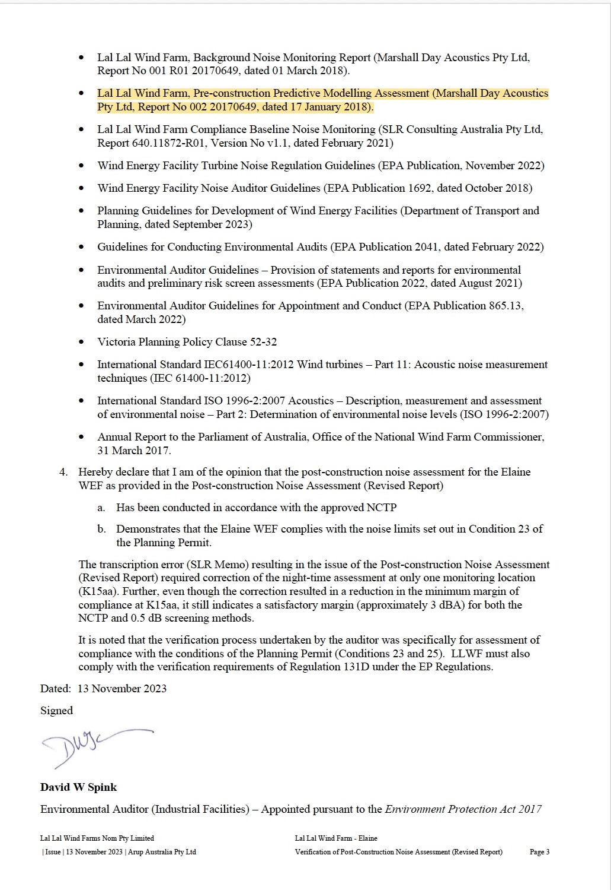
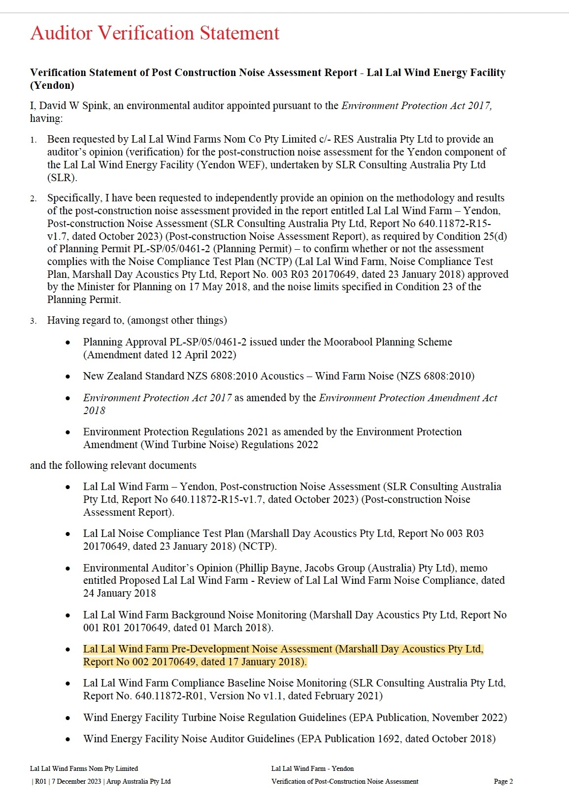
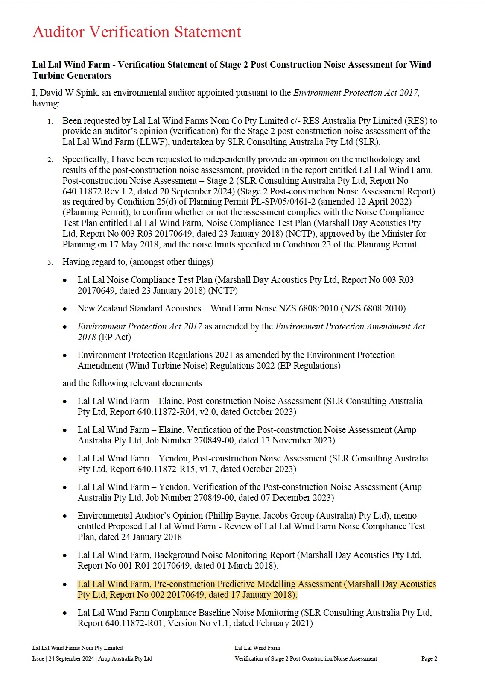

June 2018 Sonus Pre-construction Noise Assessment
A documentary guide to Sonus report S5464C11, its later administrative and technical references, and the separate Freedom of Information record concerning Environmental Auditor peer-review material.
Published through the DTP FOI record
AvailableDocument: Lal Lal Wind Farm — Pre-construction Noise Assessment
Consultant: Sonus Pty Ltd
Reference: S5464C11
Date: June 2018
Provenance: Released by the Department of Transport and Planning under FOI CS015466.
The report predicts operational wind farm noise for the proposed 60-turbine layout using identified modelling approaches, records the applicable permit noise limits, and includes receiver-specific predicted results and Vestas curtailment strategies.
Do not treat the records as one chain
The Sonus report appears in the record in different documentary contexts. Those contexts should be kept separate.
Planning-stage prediction
Marshall Day background monitoring informed the criteria identified by Sonus. Sonus then prepared the April and later June 2018 predictive assessments.
Post-construction compliance
The post-construction noise assessments and Environmental Auditor verification reports follow the endorsed NCTP pathway and identify Marshall Day material. They do not identify the June Sonus report as the technical assessment used for those PCNA or verification processes.
Later reliance and reference
EPA later identified S5464C11 as a document used to assess compliance. Separate SLR and ARUP correspondence also refers to the Sonus predictions for specific explanatory purposes.
EPA identified S5464C11 as a compliance-assessment document
In an email dated 31 January 2024, EPA listed the documents it had used to assess compliance of the Lal Lal Wind Farm. The list included the Sonus Pre-construction Noise Assessment S5464C11, together with the Elaine post-construction assessment, an auditor verification document and the Noise Management Plan.
What the email establishes
It directly records EPA's identification of S5464C11 as one of the documents EPA used when assessing compliance.
It does not establish that SLR used Sonus as the technical basis of the post-construction assessment, or that the Environmental Auditor used Sonus as the technical basis of verification.
Later SLR and ARUP references
The 2022 SLR Technical Response Letter refers to the June Sonus predictions when discussing J14aa, K15aa and comparison with operational results. The 2022 ARUP letter refers to the Sonus 35 dB(A) contour when explaining J14aa's receiver status.
These are later references in correspondence. They should not be represented as showing that the formal PCNA reports or their verification reports used Sonus instead of the Marshall Day/NCTP pathway.
The report and the separate peer-review document are different records
The record distinguishes the June Sonus assessment from any separate Environmental Auditor peer-review or verification document associated with that later report.
| Record | Present documentary status | Source |
|---|---|---|
| June 2018 Sonus report S5464C11 | Located and released; published in this record. | DTP FOI CS015466 and the released report. |
| April 2018 AECOM Environmental Auditor peer review | Identified for the April 2018 Sonus assessment. | April 2018 pre-construction record. |
| Separate peer-review or verification document corresponding specifically with S5464C11 | Not presently identified | EPA FOI-031-2024 identified no responsive auditor/peer-review documents; DTP FOI CS015466 located and released the Sonus report, not a separate verification or peer-review report. |
SR62774 and the earlier peer-reviewed Sonus version
During processing of FOI reference SR62774, Moorabool Shire Council issued a section 17(2) consultation letter requesting clarification of the document sought. Council recorded its understanding that the June 2018 Sonus LLWF Pre-construction Noise Assessment S5464C11 was not subject to an Environmental Auditor report or peer review on or after June 2018, and that a peer review had instead been conducted on an earlier version of the Sonus assessment, with that review finalised in April 2018.
EPA reliance on verified documents
In correspondence dated 30 September 2024, EPA explained that some of its assessment against the Environment Protection Regulations relied on the provision of verified documents, rather than EPA independently reassessing the technical detail of those documents beyond the auditor review.
Predicted receiver information
The June report lists K15aa and J14aa among the residences considered in the predictive assessment. Later correspondence refers to Sonus predictions for those locations. The later K15aa background-monitoring and post-construction record remains a separate documentary pathway.
The predictive assessment identified in the published ARUP verifications
The Elaine, Yendon and Stage 2 Environmental Auditor verification statements each identify the Marshall Day Acoustics predictive assessment dated 17 January 2018. None of the three published verification statements identifies the June 2018 Sonus assessment S5464C11 among the predictive assessment documents considered during the formal verification process.
Elaine verification — 13 November 2023

Yendon verification — 7 December 2023

Stage 2 verification — 24 September 2024

What was requested, located and released
The FOI record should be read by distinguishing the exact document requested from the different documents that were identified or released.
EPA FOI-002-2024
The request used the identifying wording found in the later ARUP verification record for the Marshall Day predictive assessment. The material issued through that FOI pathway included different documents, including the Sonus assessment, rather than the Marshall Day predictive report described using that wording.
DTP FOI CS015466
The DTP decision records that Document 1 was not located. The Department separately located and released the June 2018 Sonus assessment S5464C11. The release therefore identifies the Sonus report itself, not the Marshall Day predictive assessment described in the ARUP verification statements and not a separate peer-review or verification report corresponding specifically with S5464C11.
| Documentary question | Presently disclosed position |
|---|---|
| Predictive assessment expressly identified in the Elaine, Yendon and Stage 2 ARUP verification statements | Marshall Day Acoustics Report No. 002 20170649, dated 17 January 2018. |
| June 2018 Sonus S5464C11 | Located and released by DTP; later identified by EPA as a document used to assess compliance. |
| Separate peer-review or verification document corresponding specifically with S5464C11 | Not presently identified in the disclosed FOI record. |
| Marshall Day predictive report sought using the ARUP wording | The EPA FOI pathway issued different material; DTP CS015466 records Document 1 as not located. |
Documents connected with this page
Sonus S5464C11
The complete June 2018 predictive assessment released by DTP.
EPA email
EPA's 31 January 2024 list of documents used to assess compliance.
FOI record
The custody record for the released assessment and the separate peer-review material sought.
EPA verified-documents email
EPA's 30 September 2024 explanation that parts of its regulatory assessment relied on verified documents and the scope of auditor review.